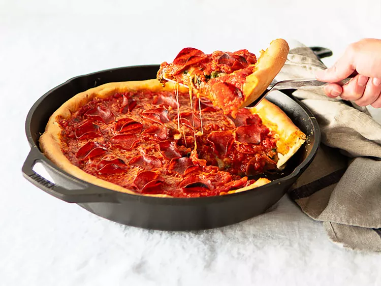

<!DOCTYPE html>
<html lang="en">
<head>
    <meta charset="UTF-8">
    <meta name="viewport" content="width=device-width, initial-scale=1.0">
    <title>Pizza Dough</title>
    <link rel="stylesheet" href="styles.css">
</html>
</head>
<body><h1>Pizza Dough</h1>
    
    <h3>Description</h3>
    <p>An authentic Chicago deep-dish pizza dough recipe. You'll be amazed by the perfection that is this pzza dough. It's buttery and flaky. Minimal mixing and kneading needed. </p>
    <h2>Ingredients</h2>
    <p>Yields 8 servings</p>
    <ul>
        <li>2 1/4 teaspoons active dry yeast</li>
        <li>1 1/2 teaspoons white sugar</li>
        <li>1 1/8 cups warm water -110 to 115 degrees F</li>
        <li>3 cups all purpose flour</li>
        <li>1/2 cup cprm oil</li>
        <li>1 1/2 teaspoons kosher salt</li>
        <li>butter as needed, for greasing</li>
    </ul>
    <h2>Directions</h2>
    <ol>
        <li>Dissolve yeast and sugar in warm water in a bowl. Let stand until yeast softens and begins to form a creamy foam.</li>
        <li>Combine yeast mixture, flour, corn oil, and kosher salt in a large stand mixer fitted with the dough hook; knead until dough holds together but still slightly sticky, about 2 minutes.</li>
        <li>Form dough into a ball and transfer to a buttered bowl. Turn to coat dough with butter, then cover the bowl with a towel anf let rise in a warm place until doubled in volume.</li>
        <li>Punch down dough and let rest for 10 to 15 minutes. Press dough into a 10-inch deep-dish pizza pan and follow your pizza recipe.</li>
    </ol>
<a href="../index.html">Home</a></body>